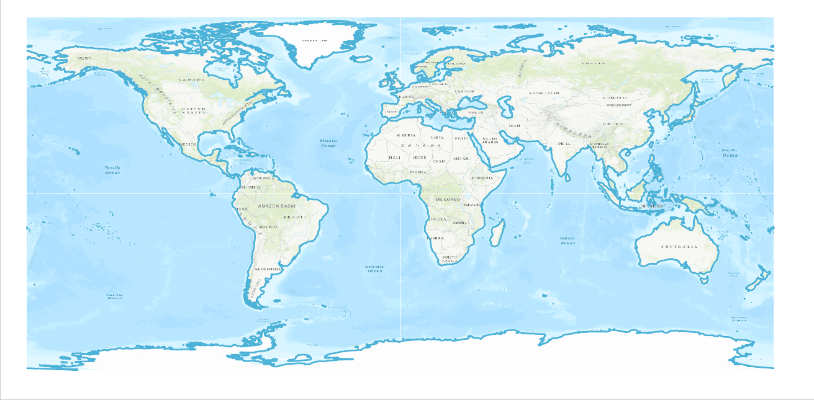
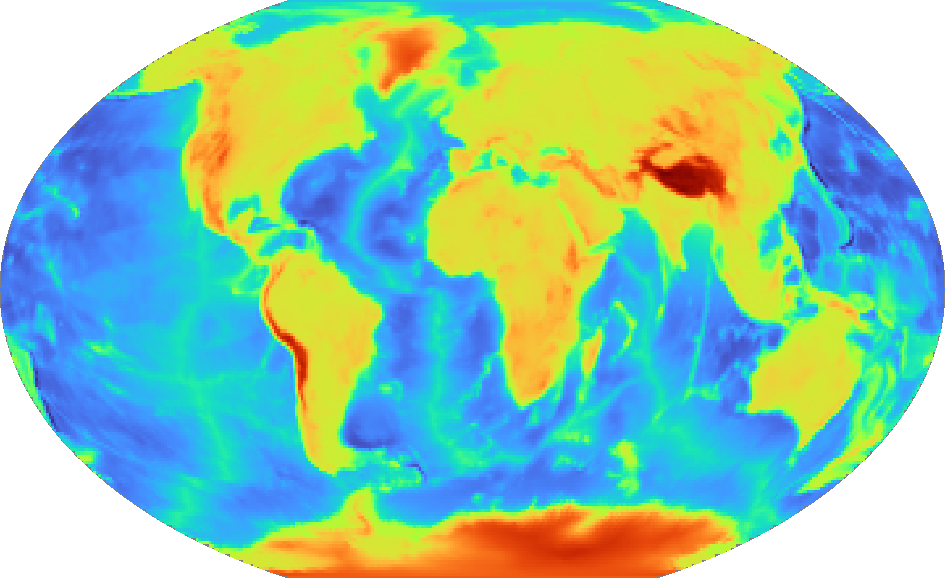
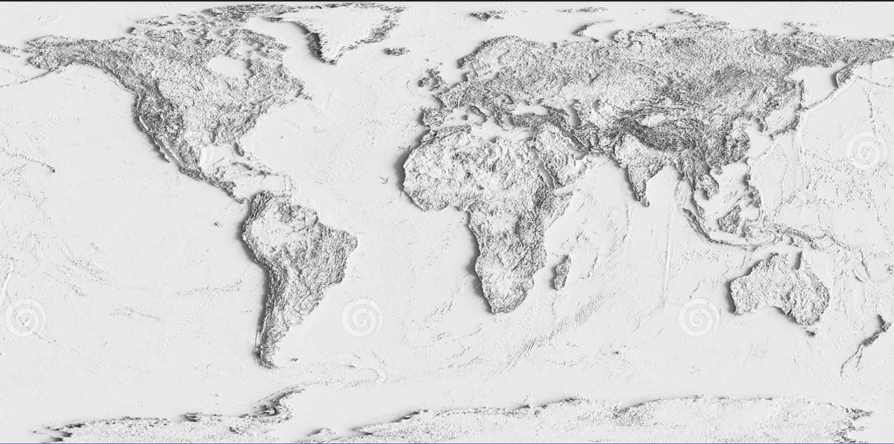
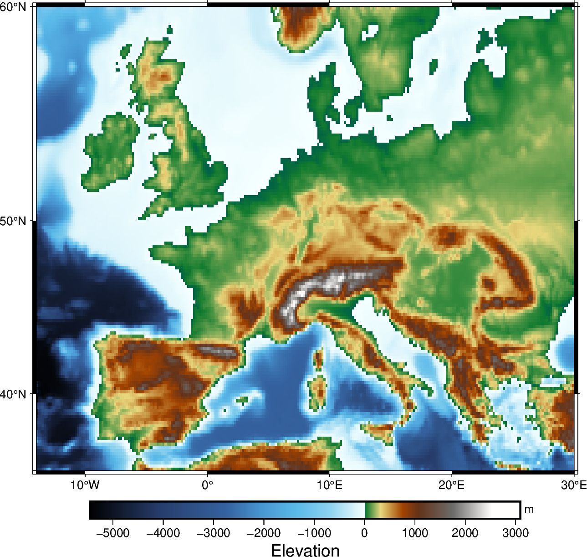

🌏 PyGMT 地球科學繪圖
— 讓數據說話，繪製專業級圖表 —
🚀 專案介紹
PyGMT 是 Python 語言結合 GMT (Generic Mapping Tools) 的強大工具。它讓地學數據的繪製變得簡潔、優雅，且具備學術發表的標準。本頁面展示了 PyGMT 的核心功能。
🛠️ 環境安裝
PyGMT 依賴 GMT 核心程式，建議使用 Conda 來管理環境，以確保所有依賴套件都能正確安裝。
# 1. 建立環境並安裝 PyGMT conda create --name pygmt python=3.9 conda activate pygmt # 2. 核心安裝指令 (確保 GMT 核心被安裝) conda install --channel conda-forge pygmt
🌍 基礎繪圖：海岸線
這是所有地圖的起點。使用 coast 方法，我們可以輕易畫出世界地圖、填色，並加上經緯度邊框。
import pygmt
fig = pygmt.Figure()
# 繪製海岸線：麥卡托投影，寬 15cm，land="gray" 填色
fig.coast(
region="g",
projection="M15c",
land="gray",
water="lightblue",
frame="a"
)
fig.show()

▲ PyGMT 輸出的標準海岸線地圖⛰️ 核心繪圖：全球地形 (grdimage)
使用 pygmt.datasets.load_earth_relief 下載數據，並使用 pygmt.Figure.grdimage 方法繪製網格影像。
import pygmt
grid = pygmt.datasets.load_earth_relief(resolution="01d")
fig = pygmt.Figure()
# R12c: Winkel Tripel 投影，寬 12cm
fig.grdimage(grid=grid, projection="R12c", cmap="geo")
fig.colorbar(frame=["a2500", "x+lElevation", "y+lm"])
fig.show()

▲ 使用 grdimage 繪製的全球地形與色彩條 (Global Earth Relief)4.1 比較不同的色階 (Color Maps)
只要改變 cmap 參數即可。例如改成 "relief"：
fig = pygmt.Figure()
fig.grdimage(grid=grid, projection="R12c", cmap="relief")
fig.show()

▲ 使用 "Relief" 色階的效果 (灰階陰影質感)🗺️ 區域放大 (Region Map)
使用 region 參數可以鎖定特定範圍，並配合高解析度數據 (例如 "10m") 來放大繪製，通常搭配 Mercator 投影。
# 載入歐洲區域的高解析度數據
grid_region = pygmt.datasets.load_earth_relief(resolution="10m", region=[-14, 30, 35, 60])
fig = pygmt.Figure()
# M15c: Mercator 投影，寬 15cm，frame="a" 加邊框
fig.grdimage(grid=grid_region, projection="M15c", frame="a", cmap="geo")
fig.colorbar(frame=["a1000", "x+lElevation", "y+lm"])
fig.show()

▲ 歐洲區域地形圖 (Mercator 投影，高解析度)✈️ 實戰應用：飛行航線圖 (Quoted Lines)
展示了 GMT Short Course 影片中的核心技巧：繪製大圓航線，並使用 style="q..." 沿著線條放置文字標籤，增加地圖的資訊豐富度。
import pygmt
fig = pygmt.Figure()
fig.coast(region="d", projection="M15c", land="lightgray", water="azure")
lons = [-58.4, 8.68, 28.04]
lats = [-34.6, 50.11, -26.20]
# 繪製紅色的引用線 (Quoted Line)，文字沿著曲線彎曲
fig.plot(x=lons, y=lats, pen="2p,red,dashed", style="qN+1:+l\"World Tour\"+f10p,Helvetica,red")
fig.show()
▲ 大圓航線與自訂標籤應用 (Quoted Lines)